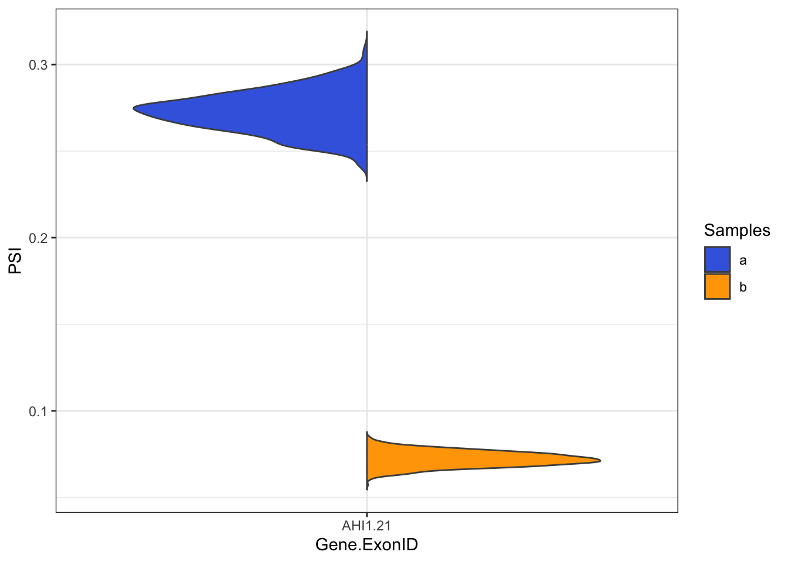
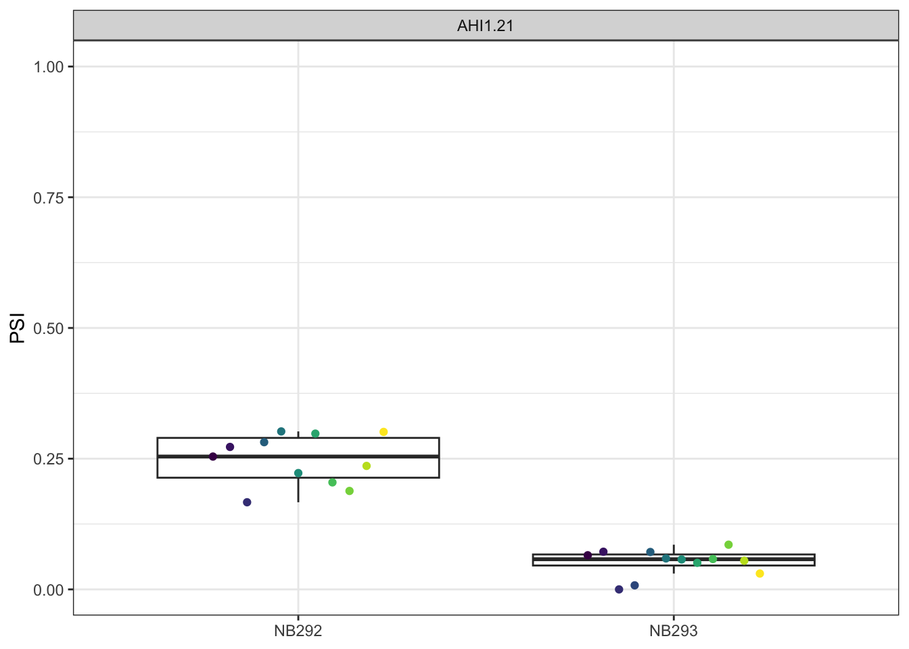

Code
library(dplyr)
library(data.table)
library(stringr)
library(tidyr)
library(ggplot2)
library(betareg)
library(see)library(dplyr)
library(data.table)
library(stringr)
library(tidyr)
library(ggplot2)
library(betareg)
library(see)Insplico uses a tab delimited file where all exons are listed and which are going to be quantified. Here you can get a subset of one used to run insplico. Insplico is ran for each sample individually and then the output of all the runs can be merged into a single big data. Here you can get a subset of a run. Here I analyzed two single cell libraries NB292 and NB293. I got the clustering of the cells based on gene expression. Alignment file was then splitted per sample into different clusters, based on cell barcodes and used as input for Insplico.
It is important to mention that each row form Insplico output correspond to each row from tab delimited exon file. More info about insplico in here
exons<-fread("exons_subset_insplico.tab", nrows = 1000) %>% mutate(ROW=row_number())
insp<-fread("subset_final_insplico.tab", nrows = 1000) %>%
mutate(ROW=row_number())Columns UPINT_MINLEN,DOWNINT_MINLEN,INTLEN_CONSIDERED,EX_MINLEN,EX_MAXLEN are equal for all samples and can be added to exons variable.
exons<-insp %>% select(UPINT_MINLEN,DOWNINT_MINLEN,INTLEN_CONSIDERED,EX_MINLEN,EX_MAXLEN) %>%
cbind(exons)For DAS analysis we will only use 4 columns:
PSI_EX
EXON_INCLSPLICED_2UPSTRM
EXON_INCLSPLICED_2DOSTRM
EXON_EXCL
insp<-insp %>% select(-c(UPINT_MINLEN,DOWNINT_MINLEN,INTLEN_CONSIDERED,EX_MINLEN,EX_MAXLEN)) %>%
select(ROW,matches(c("PSI_EX","EXON_INCLSPLICED_2UPSTRM","EXON_INCLSPLICED_2DOSTRM","EXON_EXCL"))) %>%
select(!matches("WITHIRREADS")) %>%
pivot_longer(-ROW,names_to = "temp", values_to = "values",values_drop_na = TRUE)Modify column name for getting the sample and cluster values
samples.clusters<-stringr::str_split(insp$temp,pattern = "_") %>%
lapply(function(x){paste0(rev(x)[1],".",rev(x)[2])}) %>% unlist
clusters<-gsub(".+\\.",replacement = "",samples.clusters,perl=T)
samples<-gsub("\\..+",replacement = "",samples.clusters,perl=T)Classify the value into one of the 4 columns selected.
features<-case_when(grepl("PSI_EX",insp$temp) ~ "PSI_EX",
grepl("EXON_INCLSPLICED_2UPSTRM",insp$temp) ~ "EXON_INCLSPLICED_2UPSTRM",
grepl("EXON_INCLSPLICED_2DOSTRM",insp$temp) ~ "EXON_INCLSPLICED_2DOSTRM",
grepl("EXON_EXCL",insp$temp) ~ "EXON_EXCL",
.default = NA)Add sample and count feature to the tibble
insp<-insp %>% mutate("sample.cluster"=samples.clusters,"sample"=samples,"cluster"=clusters,"feature"=features)We then need to get the count of supporting reads for inclusion/exclusion and for that we’ll do; for long reads:
(EXON_INCLSPLICED_2UPSTRM+EXON_INCLSPLICED_2DOSTRM)/2 + EXON_EXCL
for short reads it would be something like:
EXON_INCLSPLICED_2UPSTRM +EXON_INCLSPLICED_2DOSTRM + EXON_EXCL
rawinsp<-insp %>% filter(!is.na(feature)) %>%
pivot_wider(id_cols = c(sample,sample.cluster,cluster,ROW),names_from = "feature", values_from = "values") %>%
mutate(r_sup=(EXON_INCLSPLICED_2UPSTRM+EXON_INCLSPLICED_2DOSTRM)/2+EXON_EXCL)Usually for DAS analysis exons with less than 15 reads are ignored.
Additionally, constitutive exons (PSI > 90) and cryptic ones ( PSI <10) are also removed.
Here we have only two samples one per group, but more complex filters can be adjusted.
psiFilt<-rawinsp %>%
mutate(PSI_fil=ifelse(r_sup<15,NA,PSI_EX)) %>%
filter(!is.na(PSI_fil)) %>%
pivot_wider(id_cols = c(cluster,ROW),
names_from = "sample",values_from = "PSI_fil") %>%
mutate(prop_const=apply(select(.,-c(cluster,ROW)),1,function(x){sum(x>0.9)/length(x)}),
prop_cryp=apply(select(.,-c(cluster,ROW)),1,function(x){sum(x<0.1)/length(x)}))%>%
filter(!is.na(prop_const) & prop_const<=0.5 & prop_cryp<=0.5)Lets work only with the PSI values from cluster 1. The question is whether exons are differentially spliced between the two samples of cluster 1. In this case we have only two samples, and we will compare both. For this part I used similar methods as the ones reported in the paper of betAS. This methods are still under discussion and comments for improvement are more than welcome. The needed table can be found in here.
betasmat<-read.table("table_betAS.txt") #This table is provided by the betAS package.
givenCovfindIncr <- function(cov, maxDevRef){
if(cov > max(maxDevRef[,1])){
incr <- 1
}else{
p <- which(cov == maxDevRef$cov)
incr <- maxDevRef$maxIncr[p]
}
return(incr)
}
#I applied a recursive function with a limit of 10^7 sim for a pseudo p-value aproximation.
getpseudop<-function(inc1,excl1,inc2,excl2, seed=12032024){
nsim=1000
p_zero=1
set.seed(seed)
while(p_zero==1 & nsim<10^7){
r1<-rbeta(nsim,inc1,excl1)
r2<-rbeta(nsim,inc2,excl2)
p_zero<-sum((r1-r2>0))/nsim
nsim<-nsim*10
}
psudopval<-1-abs((p_zero-0.5)*2)
}We need again the number of reads per sample that support inclusion/exclusion of the exon. We’ll need to modify a bit betAS pipeline. Pseudo-pvalue will be adjusted with fdr.
resSimBeta_temp<-rawinsp %>%
right_join(psiFilt, by=c("ROW","cluster")) %>% filter(cluster==1) %>%
mutate(INC=(EXON_INCLSPLICED_2DOSTRM+EXON_INCLSPLICED_2UPSTRM)/2, #Here is set for long reads, but for short reads should be EXON_INCLSPLICED_2DOSTRM + EXON_INCLSPLICED_2UPSTRM and
EXCL=EXON_EXCL) %>% # EXON_EXCL*2
rowwise() %>%
mutate(INC=ifelse(INC==0,givenCovfindIncr(round(EXCL),betasmat),INC))%>%
mutate(EXCL=ifelse(EXCL==0,givenCovfindIncr(round(INC),betasmat),EXCL)) %>%
ungroup() %>%
select(ROW,sample,cluster,INC,EXCL) %>%
pivot_wider(id_cols = c("ROW","cluster"),names_from = "sample",values_from = c("INC","EXCL"))
resBETAS<-sapply(1:length(resSimBeta_temp$ROW),function(x){
res<-getpseudop(inc1=as.numeric(resSimBeta_temp[x,"INC_NB292"]),
excl1=as.numeric(resSimBeta_temp[x,"EXCL_NB292"]),
inc2=as.numeric(resSimBeta_temp[x,"INC_NB293"]),
excl2=as.numeric(resSimBeta_temp[x,"EXCL_NB293"]))
return(res)
})
resSimBeta_temp$psudopval<-resBETAS
resSimBeta<-resSimBeta_temp %>% group_by(cluster) %>% mutate(sudopadj= p.adjust(psudopval,method = "fdr"))This is the filtered result:
exons_results<-psiFilt %>% mutate(dPSI=NB293-NB292) %>% left_join(resSimBeta, by=c("ROW","cluster")) %>%
mutate(DiffSP=ifelse(sudopadj<0.1 & abs(dPSI)>0.15,"DS","ns"),DiffSP=factor(DiffSP,levels=c("ns","DS")) )
exons_results %>% filter(DiffSP=="DS") %>% left_join(exons, by="ROW") %>% data.table() cluster ROW NB292 NB293 prop_const prop_cryp dPSI INC_NB292
1: 1 164 0.2724699 0.07202296 0 0.5 -0.200447 385
INC_NB293 EXCL_NB292 EXCL_NB293 psudopval sudopadj DiffSP UPINT_MINLEN
1: 251 1028 3234 0 0 DS 104
DOWNINT_MINLEN INTLEN_CONSIDERED EX_MINLEN EX_MAXLEN C1
1: 2934 104 171 397 135492291+135492378
STARTS ENDS C2 CHR STRAND
1: 135495313+135495539 135495709 135495814+135497188+135497583 chr6 -
EXONTYPE GID GNAME GBIOTYPE EXMINL EXMAXL MINDISTC1START
1: vts ENSG00000135541 ahi1 protein_coding 171 397 2934
MINDISTENDC2 EXON_ID TOTALN_EXONS
1: 104 21 45data4plot<-exons_results %>% filter(DiffSP=="DS") %>% left_join(exons, by="ROW") %>% apply(1,function(x){
nsim<-1000
inc1<-as.numeric(x[8])
excl1<-as.numeric(x[10])
inc2<-as.numeric(x[9])
excl2<-as.numeric(x[11])
r1<-rbeta(nsim,inc1,excl1)
r2<-rbeta(nsim,inc2,excl2)
tibble("a"=r1, "b"=r2) %>%
mutate(EXON_ID=x[34], GENE=x[28], C1=x[20],STARTS=x[21],ENDS=x[22],C2=x[23] )
}) %>% do.call(rbind,.)
data4plot %>%mutate(GENE=toupper(GENE))%>%
ggplot(aes(x=interaction(GENE,EXON_ID)))+
see::geom_violinhalf(aes(y=b, fill="b"), color="gray30",trim = F)+
see::geom_violinhalf(aes(y=a, fill="a"),flip=TRUE, color="gray30",trim=F)+
theme_bw()+
scale_fill_manual(values=c("b"="orange","a"="royalblue"), name="Samples")+
labs(y="PSI", x="Gene.ExonID")
Now lets assume we have replicates and the different clusters are replicates of the sample. Here again we need to filter constitutive and cryptic exons. First, we’ll check what is the proportion of clusters from each sample where the number of reads supporting the inclusion/exclusion is greater than 15, and filter if the proportion is greater than 30%. This is too lax, but it is because of the toy data used, usually this proportion should be above 50%.
insp_mod<-rawinsp %>%
mutate(PSI_fil=ifelse(r_sup<15,NA,PSI_EX)) %>%
filter(!is.na(PSI_fil))
nsamples_pergroup<-rawinsp %>% select(sample,sample.cluster) %>% unique() %>% group_by(sample) %>% reframe(N_tot=n())
numEvpergr<-insp_mod %>%
group_by(ROW,sample) %>% reframe(N=n()) %>%
left_join(nsamples_pergroup, by="sample") %>% mutate(Prop=N/N_tot)
evin2check<- numEvpergr %>% filter(Prop>0.30) %>% group_by(ROW) %>% reframe(okgrps=n()) %>% filter(okgrps>1)We then check what is the proportion of clusters in each sample where an exon is consitituve or cryptic. We filtered out exons where in more than 75% it showed a pattern of constitiuve or cryptic in both samples.
EvNOTCons<-insp_mod %>%
filter(PSI_EX >0.9 ) %>%
group_by(ROW,sample) %>% reframe(N_c=n()) %>%
full_join(numEvpergr, by=c("ROW","sample")) %>%
mutate(N_c=ifelse(is.na(N_c),0,N_c),
Prop_cons=N_c/N) %>%
filter(Prop_cons <0.75) %>% group_by(ROW) %>% reframe(okgrps=n()) %>%
filter(okgrps>=1) %>% filter(ROW %in%evin2check$ROW )
EvNOTConsNOTCry<-insp_mod %>%
filter(PSI_EX <0.1 ) %>%
group_by(ROW,sample) %>% reframe(N_c=n()) %>%
full_join(numEvpergr, by=c("ROW","sample")) %>%
mutate(N_c=ifelse(is.na(N_c),0,N_c),
Prop_cons=N_c/N) %>%
filter(Prop_cons <0.75) %>% group_by(ROW) %>% reframe(okgrps=n()) %>%
filter(okgrps>=1) %>% filter(ROW %in%evin2check$ROW )
evin2check<-evin2check %>% filter(ROW %in% EvNOTCons$ROW & ROW %in% EvNOTConsNOTCry$ROW )For assesing DAS with replicates I used beta regression on the samples and p-values were adjusted with fdr
ref="NB292"
test="NB293"
Rep_res<-insp_mod %>%
filter(ROW %in% evin2check$ROW ) %>%
split(.$ROW) %>%
lapply(function(x){
ROW=x$ROW %>% unique()
temp<-x%>%
mutate(GROUP=factor(sample,levels=c(ref,test))) %>%
filter(!is.na(GROUP))
pvalor<-temp %>% mutate(PSI_EX=ifelse(PSI_EX==0,0.0001,
ifelse(PSI_EX==1,0.9999,PSI_EX))) %>%
betareg(PSI_EX ~GROUP|1,data = .) %>% summary() %>%
.$coefficients %>% .$mean
pvalor<-pvalor[paste0("GROUP",test),'Pr(>|z|)']
means<-temp %>% group_by(GROUP) %>% reframe(M=mean(PSI_EX))
ref_means<-means %>% filter(GROUP==ref)
test_means<-means %>% filter(GROUP!=ref)
dPSI<-test_means %>%
mutate(dpsi=M-ref_means$M, name=paste0("GROUP",GROUP)) %>%
select(name,dpsi)
result_out<-tibble("ROW"=ROW,test_PSI=test_means$M,
ref_PSI=ref_means$M, "dPSI"=dPSI$dpsi,"pvalue"=pvalor)
return(result_out)
}) %>% do.call(rbind,.)
Rep_res$padj<-p.adjust(Rep_res$pvalue, method = "fdr")
subset(Rep_res,padj<0.1 & abs(dPSI)>0.15) %>% data.table() ROW test_PSI ref_PSI dPSI pvalue padj
1: 164 0.05105794 0.2479636 -0.1969056 6.209091e-16 4.346364e-15data2plot<- insp_mod %>% filter(ROW %in% subset(Rep_res,padj<0.1 & abs(dPSI)>0.15)$ROW)
data2plot %>% left_join(exons, by="ROW") %>% rowwise() %>% mutate(NAME=paste0(toupper(GNAME),".",EXON_ID)) %>%
ggplot(aes(x=sample, y=PSI_EX))+
geom_boxplot(outlier.shape = NA)+
geom_point(aes(color=as.factor(cluster)), position = position_dodge(width=0.5))+
ylim(c(0,1))+
facet_wrap(~NAME)+
labs(y="PSI")+
theme_bw()+
scale_color_viridis_d()+
theme(axis.title.x = element_blank(), legend.position = "none")